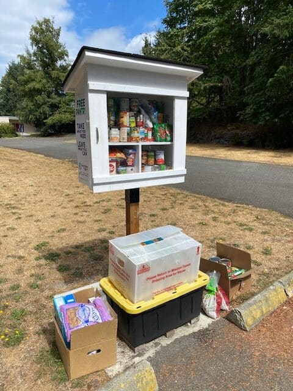
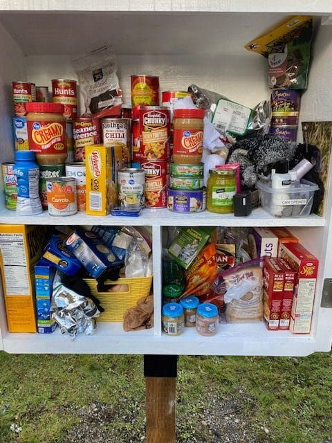
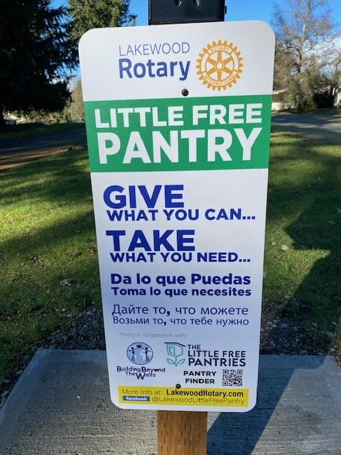
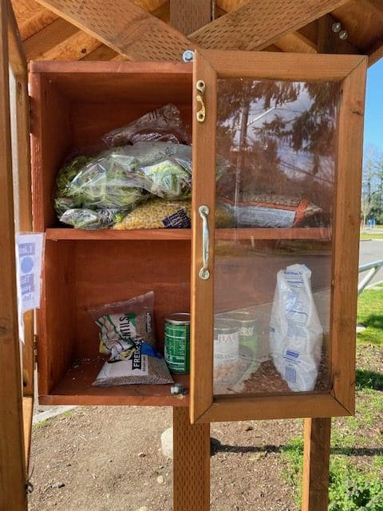
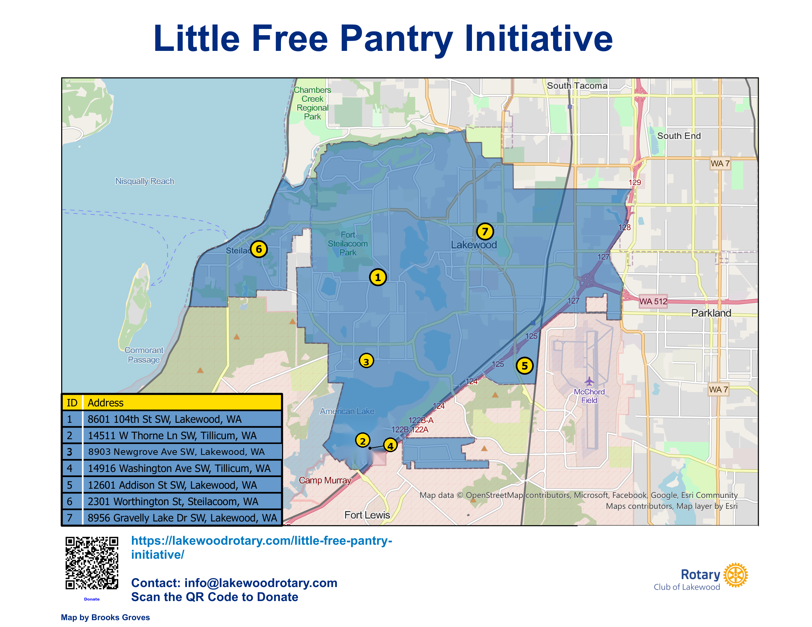

Providing 24/7 barrier-free access to food and hygiene essentials across Lakewood, Tillicum, and Steilacoom since 2020.




Give what you can… Take what you need. Our pantries come in different styles but share one mission.
During the 2020 pandemic, Lakewood Rotary launched the Little Free Pantry project to ensure that anyone—regardless of circumstance—could access food and hygiene items anytime, day or night.
Traditional food banks do critical work, but they often come with barriers: limited hours, ID requirements, and transportation challenges. Our Little Free Pantries help bridge that gap. Similar to Little Free Libraries, they're small, accessible cabinets stocked by volunteers and neighbors alike—with signage in English, Spanish, and Russian to welcome the full community.
Since we started, the program has been warmly embraced—both by those who need assistance and those who want to help. The pantries serve people experiencing homelessness, seniors on fixed incomes, and working families struggling to make ends meet.
"Those who provide sustenance not only feed the body but also the soul. What seems like a small task weaves lives together, reminding us that we are all one."
Many neighborhoods in our area lack convenient access to affordable, nutritious food. The Little Free Pantries place resources directly where people live, removing the barriers of distance and transportation that define food deserts. Want to learn more about struggling families in your area? Check the ALICE database.
Seven pantries across Lakewood, Tillicum, and Steilacoom—plus five community drop-off collection sites. Click any marker for details and directions.

Our Little Free Pantries complement food banks—they don't replace them. Because we can't provide the detailed reporting required by government agencies, we don't qualify for traditional food bank support. Instead, we've built a network of partnerships with local businesses, churches, community organizations like the YMCA (which also provides showers for the homeless), and service clubs including Pierce Transit employees.
Our dedicated volunteer team breaks tasks into simple, repeatable steps, making it easy for anyone to get involved. Donations arrive through monthly Rotary meeting collections, drop-off sites across the community, and a District Grant that funds bulk purchases.
A recent $5,000 combined grant (Club $2,500 + District $2,500) purchased bulk staples from Dollar Tree—38 cases of peanut butter, 31 cases of white chicken, 28 cases of baked beans, and much more. Some items will last six months.
Pop-top cans preferred when possible.
Individuals, groups, organizations, and businesses can organize collections. Items are accepted at all designated drop-off sites or directly at any pantry.
Scan to donate, or visit
lakewoodrotary.com/little-free-pantry-initiative
Lakewood Rotary meets Fridays at Tacoma Country & Golf Club
13204 Country Club Dr SW, Lakewood, WA 98498 | Hybrid via Zoom